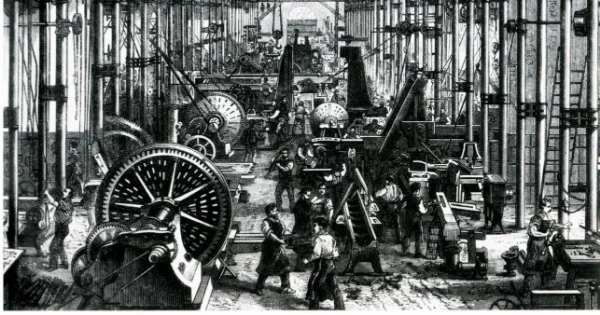

Fábricas adotam novos métodos de produção que buscam a eficiência e agilidade do trabalhador fazendo-o usar seu desempenho máximo na execução do seu trabalho. O trabalhador é monitorado segundo o tempo de produção. Cada indivíduo deve cumprir sua tarefa no menor tempo possível, sendo premiados aqueles que se sobressaem.
O uso de máquinas revoluciona o modo de produção fazendo o trabalho de um humano sem necessidade de pagamento ou qualquer tipo de descanso.
O uso de máquinas irá ajudar na industria textil e automobilística.